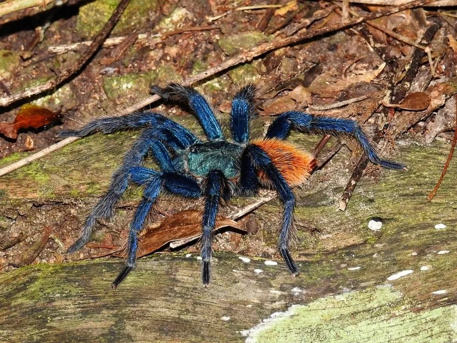

蛛形动物 · 动物界
绿瓶蓝捕鸟蛛 Chromatopelma cyaneopubescens

委内瑞拉北部特有的捕鸟蛛，腹部橙红、背甲蓝绿、步足金属蓝，三色对比强烈，性活泼善结网，是观赏捕鸟蛛中的名品。
- 分类
- 门节肢动物门纲蛛形纲目蜘蛛目科捕鸟蛛科属蓝瓶捕鸟蛛属
- 栖息环境
- 干旱灌丛、半荒漠与多岩石坡地，栖于自挖洞穴或岩缝
- 地理分布
- 委内瑞拉北部的法尔孔州与拉腊州一带，分布区狭窄
- 保护级别
- IUCN 未评估；受宠物贸易影响，建议以人工繁殖个体替代野捕
物种志
绿瓶蓝捕鸟蛛体长（含足展）约 12–15 厘米，雌性大于雄性。体色是它最著名的特征：背甲呈金属蓝绿色，腹部为鲜艳的橙红色并带深色横斑，步足呈深蓝色，三种颜色对比强烈，在捕鸟蛛中极为罕见。全身覆盖细密绒毛，腹部长有蛰毛，受惊时会用后足摩擦腹部，把蛰毛弹向空中。
它们是委内瑞拉北部干旱灌丛与半荒漠地区的特有种，栖息于自挖的洞穴或岩石缝隙中，洞口常以蛛丝加固。与许多地栖捕鸟蛛不同，它相当活跃，善于在洞穴周围铺设蛛丝网感知震动，也会攀爬低矮灌木。食性以昆虫、蟋蟀、蟑螂为主，偶捕小型蜥蜴。雌蛛每次产卵可达数百枚，幼体生长较快。由于分布区狭窄、宠物贸易需求高，野外捕捉对其种群构成压力，人工繁殖个体已成为市场主流。
形态与习性
- 足展约 12–15 cm，雌性大于雄性
- 食性昆虫、蟋蟀、蟑螂，偶捕小型蜥蜴
- 体色背甲蓝绿、腹部橙红、步足金属蓝，三色对比
- 防御受惊时用后足弹射腹部蛰毛，可引起皮肤刺痒
- 繁殖雌蛛每次产卵数百枚，幼体生长较快
- 寿命雌蛛约 12–15 年，雄蛛仅 2–3 年
- 分布范围仅见于委内瑞拉北部两三个州，分布区狭窄
趣味知识
- 它一身三色：蓝绿的背甲、橙红的腹部、金属蓝的腿，像被调色盘泼过。
- 受惊时它会用后腿蹭腹部，把细小的蛰毛弹向对手，皮肤会又痒又刺。
- 它比其他地栖捕鸟蛛活跃得多，常在洞口铺满蛛丝感应震动。